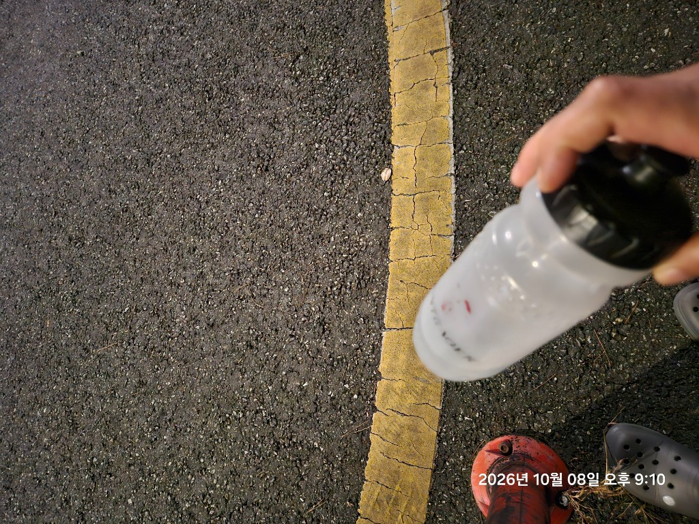

많은 러너들이 이를 근지구력 부족으로 오해하지만, 주된 원인은 '체내 수분 2% 손실로 인한 혈액 순환계 쇼크'입니다. 체온을 식히기 위해 땀이 배출되면 혈액량이 줄어들고 심장은 1회 박출량을 유지하지 못해 심박수를 억지로 끌어올립니다(심장 드리프트). 내 몸의 시간당 땀 손실률(Sweat Rate)을 정확히 계산하는 법과 맹물만 마실 때 발생하는 저나트륨혈증의 위험, 실전 전해질 배합 공식을 정리합니다.

📸 실측 에셋: 지속주 훈련 전용 하이드레이션 보틀: 60분 이상 중장거리 훈련 시 맹물이 아닌 전해질(나트륨·칼륨)과 6% 등장성 탄수화물을 배합해 15~20분 간격으로 소량씩 섭취할 때 심박 드리프트와 근육 경련을 원천 차단할 수 있습니다.
1. 탈수 2%의 법칙: 왜 수분이 조금만 빠져도 심장이 폭주할까?
인체는 체온을 37도 안팎으로 유지하기 위해 끊임없이 피부 모세혈관으로 피를 보내고 땀을 증발시킵니다. 하지만 땀으로 빠져나가는 수분은 결국 '혈장(혈액 속 수분)'에서 빠져나오는 것입니다.
⚠️ 체중의 2% 탈수가 신체에 미치는 도미노 현상
- 혈액 점도 상승 및 혈장량 감소: 피가 끈적해지며 심장으로 돌아오는 정맥 환류량(Venous Return)이 감소합니다.
- 1회 심박출량(Stroke Volume) 급감: 심장이 한 번 뛸 때 뿜어내는 피의 양이 줄어듭니다.
- 심장 드리프트(Cardiac Drift) 발생: 속도를 올리지 않았는데도 동일한 산소를 공급하기 위해 분당 심박수가 10~20 bpm 가량 가파르게 상승합니다.
- 근육 산소 공급 차단 및 젖산 축적: 피부로 피를 빼앗긴 다리 근육에 산소가 부족해지며 조기 파진과 다리 쥐(경련)가 발생합니다.
2. 내 시간당 땀 배출량(Sweat Rate) 자가 측정 공식
모든 러너의 땀 배출량은 체중, 달리는 페이스, 유전, 기온에 따라 시간당 500ml에서 2,000ml까지 천차만별입니다. 다음 공식으로 자신의 시간당 땀 손실량을 한 번만 측정해두면 평생 나만의 급수 기준이 생깁니다.
📐 시간당 땀 손실률(Sweat Rate) 계산 공식
시간당 땀 배출량 (L/h) = [운동 전 체중(kg) - 운동 후 체중(kg) + 마신 수분(L) - 소변 배출량(L)] ÷ 달린 시간(h)
- 60분 지속주 전 체중: 70.0 kg / 훈련 직후 체중: 69.2 kg (손실 0.8kg)
- 달리는 동안 보틀로 마신 물: 0.2 L (200ml) / 소변 배출: 없음
➔ 내 시간당 땀 손실량 = (70.0 - 69.2 + 0.2) ÷ 1 = 1.0 L/h (시간당 1,000ml)
➔ 훈련 중에는 위장 부담을 고려하여 이 손실량의 약 60~80%(시간당 600~800ml)를 15분 간격(회당 150~200ml)으로 나누어 보충해야 합니다.
3. 맹물만 마실 때 찾아오는 공포: 운동유발성 저나트륨혈증(EAH)
달리며 땀을 흘릴 때 수분만 빠져나가는 것이 아닙니다. 땀 1리터당 약 800~1,500mg의 나트륨(소금)이 함께 소실됩니다. 이 상태에서 갈증이 난다고 소금이 없는 순수 '맹물'만 대량으로 마시면 치명적인 결과가 발생합니다.
| 구분 | 단순 탈수 (Dehydration) | 저나트륨혈증 (Hyponatremia) |
|---|---|---|
| 발생 원인 | 수분 보충 부족으로 혈액량 감소 | 땀 배출 후 맹물만 과다 섭취해 혈중 나트륨 희석 |
| 초기 증상 | 입 마름, 짙은 소변, 심박수 증가 | 두통, 메스꺼움, 손가락 붓기(반지가 낌), 어지럼증 |
| 위험성 | 근육 경련, 일사병, 페이스 저하 | 삼투압 역전으로 뇌부종(Brain Edema), 혼수 상태, 의식 소실 |
4. 마라토너와 중장거리 러너의 황금 급수 프로토콜
💧 실전 수분 & 전해질 보충 수칙
- 달리기 2시간 전 (사전 수화): 500ml의 수분을 천천히 섭취하여 연한 볏짚 색의 소변 색을 확인합니다.
- 달리는 중 (15~20분 간격 급수): 목이 마를 때까지 기다리지 말고, 15~20분마다 150~200ml씩 규칙적으로 입에 머금듯 마십니다.
- 60분 이상 지속주 전해질 세팅: 물 500ml당 나트륨 250~350mg(소금 약 0.7~0.9g) 또는 러너 전용 전해질 타블렛 1알을 녹여 지참합니다.
- 탄수화물 농도 6~8% (등장성): 위장 장애 없이 혈관으로 가장 빠르게 수분이 흡수되는 당류 농도는 6~8%입니다. 시판 이온 음료나 에너지젤을 물과 함께 섭취합니다.
🫀 탈수와 심장 드리프트를 방어하는 내 안전 심박존은?
내 체력과 심폐 한계에 맞는 정확한 Zone 1~5 심박 구간을 확인하고, 무리한 오버페이스로 인한 조기 탈수를 예방해보세요.
🫀 카보넨 심박존 계산기 실행하기 ›- Sawka, M. N., et al. (2007). American College of Sports Medicine position stand. Exercise and fluid replacement. Medicine & Science in Sports & Exercise, 39(2), 377-390.
- Hew-Butler, T., et al. (2015). Statement of the Third International Exercise-Associated Hyponatremia Consensus Development Conference, Carlsbad, California, 2015. British Journal of Sports Medicine, 49(22), 1432-1446.
- Coyle, E. F. (2004). Fluid and fuel intake during exercise. Journal of Sports Sciences, 22(1), 39-55.